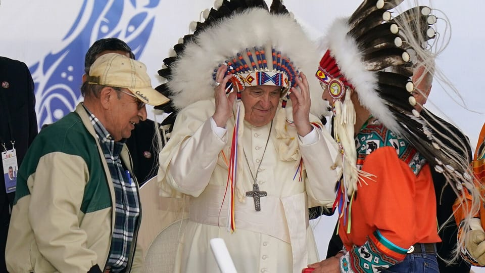

世界苦茶11月16日新闻 | 29条 | 台湾国民党与中方会谈

台湾国民党与中方会谈 | 国民党大批红统反对日本言论 | 特朗普与MAGA盟友分离 | 美众议院将就爱泼斯坦案进行投票 | 乌克兰能源部门腐败丑闻引发争议
苦茶数据
美元兑人民币：7.10（昨日7.10，前日7.09）
美元兑日元：154.04（昨日154.55，前日154.48）
上证指数：休市（昨日3990，前日4029)
标普500指数：休市（昨日6734，前日6737）
比特币：95958（昨日96167，前日97264）
布伦特原油：64.39（昨日64.06，前日63.24）
中国新闻
• 国民党副主席会宋涛 台媒：陆委会或出手反制。
台湾在野的国民党副主席张荣恭与中共中央台办主任宋涛会面后，台湾媒体报道，台湾政府的大陆委员会或出手反制，上海市台办副主任李骁东赴台许可恐被撤，让年底的台北上海双城论坛再生变数。综合新华社和国民党官网消息，也是大陆国台办主任的宋涛星期五傍晚在上海和平饭店会见张荣恭一行时说，中共总书记习近平致电祝贺郑丽文女士当选国民党主席，为今后两党和两岸关系发展指明了方向。他特别提到，要坚决粉碎“日本等任何外部势力”介入台海事务、干涉中国内政的挑衅和图谋，“推进祖国统一大业”。张荣恭则向宋涛重申了国民党一贯的两岸立场，称郑丽文在回复习近平的电文中明确表示。
• 为防网购退货 中国商家给衣服上密码锁。
为应对日益攀升的退货潮，中国服饰商家想出给衣服拉链上密码锁、挂上“巨型吊牌”等方法，防止消费者拿到衣服、拍完照之后就退货退款。综合《中国新闻周刊》、澎湃新闻报道，中国电商平台普遍有“七天无理由退货”的政策，但一些消费者网购服装后，穿一次、拍一次照就退货，成为许多服装商家经营痛点。去年4月，沈阳一家职业技术学校60多名学生集体网购衣服，参加完运动会后又集体以“质量问题”为名退货退款。因退货量大，店主称服装链接被封了三个月，损失约8000元人民币。据36氪的《中国直播电商行业研究报告》，直播电商女装退货率普遍达到50%至60%，男装为30%至40%。
• 日本对中国因涉台言论发布的旅行警示提出抗议。
在围绕日本新任领导人就台湾发表言论的争议持续未息之际，中国建议其公民避免前往日本，引发日本方面周六提出异议。共同社报道，东京政府已提出抗议，内阁官房长官木原稔敦促中国采取“适当措施”。中国周五建议其公民近期避免前往日本，理由包括此前在日中国人遭受的袭击以及所谓日本首相高市早苗关于台湾的“错误言论”，称这些言论破坏了中日交流的氛围。共同社引述木原对记者称，正因为两国政府存在分歧，进行多层次沟通尤为必要。过去一年里，中国曾多次建议在日公民注意安全防范。
印太新闻
• 郑丽文日媒专访倡“一中保台” 马英九洪秀柱批高市涉台言论。
台湾最大在野党国民党主席郑丽文接受日本媒体专访时说，只有接受“一个中国”才能确保台湾生存；国民党前主席马英九和洪秀柱则同日发声，批评日本首相高市早苗的“台湾有事”言论，引起绿营反弹。综合《联合报》和《中国时报》报道，郑丽文在《日经亚洲》星期五刊登的专访中说，如果台湾能接受“一个中国”，也就是“九二共识”，即便存在不同解读，台海紧张局势也会消失；唯有如此，才能确保台湾的生存，而非依赖美国总统特朗普推动、台湾总统赖清德所承诺的快速增加防务开支。郑丽文还说，民进党统治下的“绿色恐怖”在台湾产生寒蝉效应。（翻評：人要不自救，基本就完蛋了。）
• 巴基斯坦军队一直具有影响力——现在其首长获得了新的权力。
巴基斯坦议会已通过法案，赋予陆军首长元帅阿西姆·穆尼尔新权力，并给予其终身免于逮捕和起诉的豁免，批评者称此举为通往独裁铺平了道路。第27号宪法修正案于周四签署成为法律，且将对该国最高法院的运作方式做出重大改变。为修正案辩护者称，此举为武装部队提供了明确性和行政框架，同时有助于缓解法院的积案。巴基斯坦军方长期在这个拥有核武器的国家政治中扮演重要角色——有时通过政变掌权，另一些时候则在幕后操控。
• 郑丽文与美国在台协会处长会面 聚焦台海与区域安全。
台湾在野的中国国民党主席郑丽文，星期三与美国在台协会处长谷立言会面，强调两岸和平不仅攸关区域稳定，更是全球和平不可或缺的关键。郑丽文11月1日上任，各界高度关注她领导的国民党的两岸政策路线，以及对美关系的走向。受访专家认为，美国已表明无意帮助“台独”造成台海冲突，且国民党要走两岸和解道路，美国反而必须争取国民党支持国防预算等。台湾明年的国防预算高达9495亿元，已达当地生产总值的3.32%；总统赖清德宣示，国防预算将在2030年提高至GDP的5%。不过，相关预算须经在野党掌控多数的立法院通过才能生效。作为最大在野党党魁的郑丽文早前称，台湾将国防预算提高至GDP的3%以上，可能冲击政府财政规划。
**• 印控克什米尔地区一警察局11月14日发生爆炸，造成至少9人死亡、32人受伤。事情发生时，警察局内正在检查收缴的爆炸物。警方排除了违规操作，认为爆炸为一场意外。 **
科技新闻
• Nexperia 风波如何揭示欧洲在美中芯片战中的影响力减弱。
恩智浦事件暴露出欧洲对芯片供应链控制的松动 围绕这家荷兰芯片制造商的争端显示，在日益加剧的美中对抗面前，欧洲的地缘政治中立性正在侵蚀 在2018年最新一次升级后，其年产能激增至900亿片，成为这家中国控股的荷兰芯片制造商全球网络中最大的封装组装基地。然而，这一全球化制造的象征在上个月突然成为一枚关键棋子，引发了一场激烈的地缘政治拉锯，将荷兰政府与该公司中国所有者闻泰科技对立起来。恩智浦事件造成了全球汽车芯片短缺，也暴露了一个新现实：欧洲曾被极力吹捧的中立与产业主权正在流失，而中国在制造业中的基础性角色已大到无法倒塌、又复杂到无法通过法律轻易拆解。
•特斯拉加快“去除中国零件”战略。
2025年11月15日据《华尔街日报》周六援引知情人士报道，特斯拉已经要求其供应商在美国生产汽车时避免使用中国制造的零部件。该报认为，这是中美地缘政治紧张加剧所带来影响的最新例证。广告 知情人士向《华尔街日报》透露，今年早些时候，电动车制造商特斯拉已决定停止在美国制造的特斯拉车型中使用中国制造的零部件。特斯拉及其供应商已将部分中国零部件替换为其他地区生产的部件，并计划在未来一至两年内全面替换中国部件。《华尔街日报》同时指出，自新冠疫情期间中国供应链中断以来，特斯拉便开始努力降低其美国产汽车对中国零部件的依赖，并鼓励中国供应商在墨西哥等地设厂。
经济新闻
• 中央化债10万亿元一年后 中国多地政府面临稳增长与投资失速压力。
2025年收尾之际，困扰中国经济的除了挥之不去的通缩阴影，还有愈发明显的投资失速。今年9月，中国固定资产投资单月增速降至负6.5％的近五年最低点，前三季固定资产投资累计同比下降0.5%，这是该指标自2020年10月以来首次出现负增长。星期五公布的最新数据显示，1至10月固定资产投资累计同比降幅扩大至1.7%；根据第三方测算，固定资产投资单月增速10月进一步降至负12.2%。地区生产总值排名全国前四的广东、江苏、山东和浙江，今年前三季的固定资产投资跌幅均超出全国水平。
• 中国起草互联网平台反垄断合规指引 提示新型垄断场景。
中国市场监管部门针对互联网平台起草反垄断合规指引意见稿，特别提示“全网最低价”“低于成本销售”等新型垄断风险。中国国家市场监督管理总局官网星期六发布《互联网平台反垄断合规指引》，向社会公开征求意见。《指引》结合反垄断监管执法经验，以示例方式为平台经营者列举了八种风险：平台间算法共谋、组织帮助平台内经营者达成垄断协议、平台不公平高价、平台低于成本销售、封禁屏蔽、“二选一”行为、“全网最低价”和平台差别待遇。中国市监总局解读表示，《指引》旨在促进平台经济创新和健康发展，不具有强制力，但希望平台主动开展风险评估自查。
• 巴西副总统表示，巴西咖啡、牛肉和热带水果仍将被征收40%关税。
巴西副总统热拉尔多·阿尔克明周六表示，尽管美国总统唐纳德·特朗普决定取消部分进口税，但对美出口的巴西商品包括咖啡、牛肉和热带水果仍将被征收40%的关税。上周五，特朗普在一项戏剧性举措中取消了他在四月宣布、称之为“解放日”的部分税率，旨在鼓励国内生产并提振美国经济。此前巴西受到10%的关税。但在七月，特朗普又对巴西加征了额外40%的关税，理由包括对其盟友、前总统雅伊尔·博尔索纳罗的审判，他称之为“政治迫害”。审判照常进行，九月博尔索纳罗因阴谋政变被判处27年零三个月监禁。
• 中国打击将“零里程”新车虚假申报为已使用后出口的行为。
中国严查“零里程”车虚假申报为二手车出口 批评者称，此类车辆通常以更低价格出售但无售后保障，扰乱市场 商务部周五发布通知称，从明年起，对于在国内登记未满180天的车辆出口，出口商必须证明目的地可提供售后服务。售后服务的可用性须由汽车制造商确认。通知还表示，各地商务主管部门将加强对出口许可证发放及出口商合规性的监管。新规针对所谓“零里程”二手车出口——即以二手车名义出售的新车——车企认为此类做法扭曲市场。
• 前财政部长：中国房地产低迷可能再阻碍经济增长五年。
前财政部长楼继伟警告称，中国房地产市场的低迷尚未触底，将在未来继续拖累经济增长五年有余，并呼吁采取扩张性财政与货币政策及结构性改革，以应对该行业持续的逆风。楼继伟周五在北京举行的2025财新峰会上表示，决策者近年来推动逐步取消备受争议的预售制度并确保交房，但“进度可以加快”。房地产市场的低迷已抑制了消费增长并加剧了通缩压力，意味着“在一段时间内需要扩张性财政和货币政策”。通过将教育、医疗和养老与户口挂钩，该制度被普遍视为造成城乡差距的驱动因素。
• 选战失败压力凸显，特朗普关税立场大幅后撤，默认关税推高物价。
特朗普政府周五表示，将取消对进口牛肉、西红柿、香蕉和咖啡等外国商品的关税，而且不局限于已经签署协议的国家，等于承认关税推高了价格。这些豁免立即适用于特朗普4月对其他国家出口产品宣布的“对等”关税。白宫表示，随着贸易谈判取得实质进展，包括十多项框架协议、正式贸易协议和投资协议，这些关税已不再必要。白宫在发给媒体的一份文件中表示，“许多已经达成或正在谈判的贸易协议，涉及大量美国本土未能充分生产的农产品。” 根据这项决定，茶叶、橙汁、菠萝汁、香蕉和腰果等多种常见农产品也将被豁免关税。这些决定似乎也是因为受到消费品价格上涨。特朗普在竞选期间曾承诺降低食品价格，但持续的高通胀已对他的支持率造成压力。
俄乌战争
• 彭博社报道，美国推迟对俄罗斯石油巨头卢克石油的制裁。
彭博社11月14日报道，美国财政部已推迟对俄罗斯石油巨头卢克石油实施制裁，给予该公司时间处置其国际资产。卢克石油在请求美国官员推迟制裁前不久已开始就出售其海外资产进行谈判。彭博援引未具名消息人士称，近日对卢克石油海外资产的兴趣有所上升，来自美国，欧洲和波斯湾的潜在买家正向财政部申请批准与该公司接洽。彭博称，讨论中的一种方案是由一名主要买家收购卢克石油大部分国际资产，并辅以数笔较小交易。美国财政部表示，特朗普政府已对涉及卢克石油的某些交易授予有限豁免，以便与外国政府和潜在买家就该公司国际资产出售进行配合。
• 泽连斯基在1亿美元腐败丑闻后誓言彻底整顿能源部门。
泽连斯基在一场涉1亿美元腐败丑闻后誓言整顿能源部门 乌克兰总统弗拉基米尔·泽连斯基誓言对国有能源公司进行“全面整顿”，此举源于一场席卷全国能源领域的重大腐败丑闻。反贪调查人员称约有1亿美元被挪用，这在因俄罗斯袭击导致严重停电的国家激起了公愤。“除了对其财务活动进行全面审计外，这些公司的管理层也将被更新，”泽连斯基周六在X上的一则帖子中写道。他补充说，处于丑闻核心的国有核能公司Energoatom将在“一周内”成立新的监事会。涉案的若干人同泽连斯基有密切关系。该丑闻发生之际，俄罗斯对乌克兰能源设施的袭击不断升级，包括为核电站供电的变电站被袭。
• 波兰总统签署对乌克兰难民的社会援助法，称这是“最后一次”。
波兰总统卡罗尔·纳夫罗茨基11月14日表示，他已签署一项援助乌克兰难民的法律，将其法律地位延长至2026年3月，但这是“最后一次”，据Gazeta.pl报道。俄乌全面入侵后，波兰成为乌克兰难民的主要目的地。据乌克兰驻波兰大使瓦西里·博德纳称，截至2025年夏季，约有100万乌克兰难民居住在波兰。全面战争爆发后，波兰为乌克兰人实施了社会支持措施，包括每月经济援助，医疗保障和合法居留身份。纳夫罗茨基宣布，除非找到“新解决方案”，否则不会再签署为乌克兰人提供援助的法律。总统认为，现行规定对波兰人“不公平”，实际上将波兰公民与他国公民等同看待。
• 乌克兰证实从诺沃瓦西利夫斯克撤军，正值俄罗斯在扎波罗热州推进。
乌克兰证实在俄军于扎波罗热州推进之际从诺沃瓦西利夫斯克撤退 南部防御部队于11月15日证实，乌克兰军队已从扎波罗热州的诺沃瓦西利夫斯克村撤出，转入“更有利的防御阵地”。这一通报发布之际，乌军在扎波罗热方向多个阵地在俄军加大压力下已相继撤退。俄军在十月和十一月加速推进，现已威胁到小城胡利亚波列的侧翼，该城自全面战争初期以来一直是前线最为稳固和静态的部分之一。“在奥列克桑德里夫斯克和胡利亚波列方向，过去一天内发生近40次战斗交锋，”通报写道。“敌人持续攻击我方阵地并试图深入突破乌克兰防线。”通报称，乌方因“接触线调整，部队重组及保护官兵生命”而撤出该定居点。
• 乌克兰情报机构称，朝鲜因自身弹药库存告急已将对俄罗斯的炮弹供应削减一半。
乌克兰情报称，由于本国库存耗尽，朝鲜将对俄炮弹供应减半 乌克兰军情局副局长瓦迪姆·斯基比茨基13日对路透社表示，平壤在2025年将对俄罗斯的炮弹供应削减了超过一半，原因是自身弹药库存减少。朝鲜的炮弹曾使俄罗斯在2024年维持了射击节奏，但今年这种支持明显减少，运往克里姆林宫的弹药在数量和质量上都大幅下降。斯基比茨基告诉路透，2023年朝鲜从库存中向俄罗斯提供了约650万发炮弹，在俄全面入侵乌克兰后借此机会加强了与莫斯科的关系。乌军情报显示，9月份没有记录到任何运输，10月份则有部分被跟踪到。
• 在过去24小时内，俄罗斯的袭击在乌克兰各地造成9人死亡、53人受伤。
地区当局11月15日报道，过去一天俄罗斯对乌克兰的袭击至少造成9名平民死亡、至少53人受伤。乌克兰空军称，俄罗斯军队从俄罗斯坦波夫州发射了3枚“飞毛腿”弹道导弹，并从库尔斯克、米勒沃罗、阿赫塔尔斯克沿海、奥廖尔、布良斯克及被俄占领的克里米亚发起了135架无人机袭击。乌克兰防空和电子战系统拦截了2枚弹道导弹和91架无人机，另有1枚弹道导弹和41架无人机在13处击中目标，另有4处记录到坠落残骸。基辅市军事行政区负责人蒂穆尔·特卡琴科和基辅市长维塔利·克里琴科称，11月14日对首都的一次俄罗斯袭击造成7人死亡、36人受伤，基辅9个区遭到破坏。
世界新闻
• 法官无限期阻止特朗普就涉嫌歧视对加州大学处以罚款。
联邦法官无限期禁止特朗普政府就所谓歧视对加州大学处以罚款 联邦法官周五晚间在一份措辞严厉的裁决中裁定，特朗普政府不能因指称加州大学存在反犹太主义或其他形式的歧视就对其处以罚款或简单地切断该校系统的联邦资助。旧金山联邦地区法院法官丽塔·林发布临时禁令，禁止政府在未向受影响的教职员发出通知并举行听证等要求得到满足之前，以所谓歧视为由撤销对加州大学的拨款。今年夏天，政府曾要求加州大学洛杉矶分校支付12亿美元，以恢复被冻结的研究经费并确保未来的资助资格，理由是指控该校允许校园内存在反犹太主义。UCLA是首所因涉嫌侵犯民权而成为政府目标的公立大学。政府也曾因对私立院校的类似指控冻结或暂停联邦资助。
• 刚果与卢旺达支持的M23叛军签署和平协议框架，但紧张局势仍然存在。
刚果与卢旺达支持的叛军组织“M23”周六签署了和平协议框架，这是迄今为止旨在结束刚果东部长期冲突的最新努力。年初，M23在冲突重大升级中占领了东部两座关键城市戈马和布卡武。得到邻国卢旺达支持的M23，是在刚果矿产丰富的东部争夺控制权的100多个武装团体中最显著的一支。联合国称，刚果的冲突已导致700万人流离失所，是“地球上最久，最复杂，最严重的人道主义危机之一”。周六在多哈签署的这份协议是在卡塔尔和美国调解后达成的，但还不是最终和平协议，而是一个列出达成最终协议所需措施的框架。
• 众议院计划周二就公布爱泼斯坦档案进行投票。
众议院拟于周二就公开爱泼斯坦档案表决 总统唐纳德·特朗普多次试图阻止此举，但“排除议程申请”已迫使议长迈克·约翰逊作出决定。约翰逊表示他计划投票反对有关爱泼斯坦的议案，但预计有大量共和党人会支持该法案。| Francis Chung/POLITICO 据三位获准在公开宣布前就内部计划发表意见的匿名人士称，众议院共和党领导层计划在周二就一项强制公布与杰弗里·爱泼斯坦相关联邦档案的立法进行表决。这一暂定安排是在众议员托马斯·马西与罗·卡纳成功绕过议长迈克·约翰逊、并以“排除议程申请”迫使就他们的两党法案进行全体表决之后形成的。该法案旨在强制司法部公开与已故被定罪性犯罪者有关的全部记录。
• 教皇将62件文物归还给加拿大原住民，作为对殖民过去清算的一部分。
梵蒂冈周六将其庞大民族志收藏中的62件文物移交给来自加拿大的原住民，作为天主教会反思其在美洲助长压制原住民文化角色的一部分。教皇列奥十四将这些文物——包括一只标志性的因纽特皮划艇——及相关文献交给了加拿大天主教主教会议，该会议表示将“尽快”把这些物品归还给原住民社区。梵蒂冈与加拿大教会在一份联合声明中将这些物品称为“礼物”以及“对话，尊重与友爱的一项切实象征”。加拿大主教会议的传播总监波梅琳·马蒂诺斯基表示，这些文物预计于12月6日抵达蒙特利尔，首先被送往渥太华的加拿大历史博物馆，由该馆安排将它们“与其原始社区重新团聚”。一个世纪以来，这些物品一直是梵蒂冈博物馆民族志收藏的一部分。
• 特朗普与玛乔丽·泰勒·格林切断关系——她曾是他在MAGA阵营中最强有力的拥护者之。
唐纳德·特朗普公开与他最坚定的MAGA支持者之一划清界限，将乔治亚州众议员玛乔丽·泰勒·格林称为“古怪的玛乔丽”，并表示如果“合适的人”参选，他将在明年中期选举中支持反对她的挑战者。格林曾被视为“让美国再次伟大”的典型代表，戴着标志性的红帽出现在乔·拜登2024年国情咨文现场，并曾在特朗普与国会山其他共和党人之间充当联络人。随着格林似乎在淡化其政治形象，这次对她的否定似乎是几个月来积怨最终爆发的结果。这位三届众议员在最近愈发与共和党领导层分歧，在刚结束的联邦政府停摆期间抨击他们。
• 在特朗普提出请求后，美国司法部调查爱泼斯坦据称与克林顿及多家银行的关联。
美国司法部已确认将调查恋童癖金融家杰弗里·爱泼斯坦据称与大型银行及多位知名民主党人之间的关联。美国总统唐纳德·特朗普表示，他将要求司法部长潘姆·邦迪和联邦调查局调查爱泼斯坦与克林顿等人的“牵连和关系”。邦迪称司法部“将以紧迫性和诚信来推进此事”。特朗普的请求出现在美国国会公布数千封爱泼斯坦电子邮件数日后——这些邮件中提及了美国总统。民主党人指责特朗普试图转移外界对他与爱泼斯坦关系的质疑。由众议院监督委员会公布的邮件涉及多名公众人物。《华尔街日报》的一项审查发现，在2,324个邮件线程中，有超过1,600处提到特朗普。委员会民主党首席成员罗伯特·加西亚表示。
• 智利选举将上演鲜明的左右对决。
本周日，智利人将前往投票站，参加选举总统、参议院和国会。但与四年前选出左翼前学生领袖加布里埃尔·博里奇，成为该国最年轻总统并获赋予扩大福利国家的mandate不同，这一届竞选面貌截然不同。选民关注的首要议题为安全、移民与失业。三位右翼候选人正角逐，与民调领先的共产党政治家、现年51岁的让娜特·哈拉一起，很可能进入下月举行的决选。哈拉曾在博里奇政府任劳工部长，亦是前学生及工会领袖，承诺逐步推行每月780美元的最低收入，并向工人发放现金转移支付，同时为小微企业提供补贴。她于周三傍晚在首都圣地亚哥南区的一个露天广场举行结束性竞选活动。
• 黎巴嫩将就以色列在其境内容修建隔墙提出投诉。
黎巴嫩总统周六已要求外交部长着手对以色列在黎巴嫩境内修建隔墙一事提出申诉。总统约瑟夫·奥恩办公室发布的声明称，他要求外交部长在申诉中援引部署在以色列边界沿线的联合国维和部队发布的声明。联合国驻南黎巴嫩临时部队周五在一份声明中表示，以色列军队在黎巴嫩雅鲁恩村西南方向修建了一道墙。UNIFIL称，该墙越过了边界线，使逾4000平方米的黎巴嫩领土“对黎巴嫩民众无法进入”。UNIFIL表示已将其发现通报以色列军方并要求拆除该墙，称该墙的建设违反了去年11月经美国斡旋达成的，结束为期14个月以色列—真主党战争的联合国安理会决议。